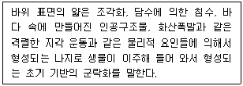
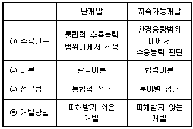
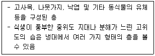
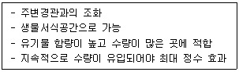
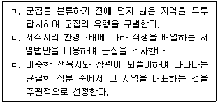
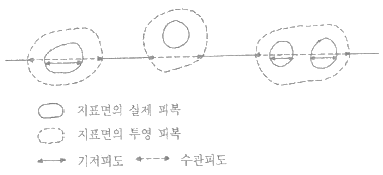

자연생태복원산업기사 (2015-08-16 기출문제)
1과목: 환경생태학개론
1. 낙엽층(Litter층)에 관한 설명으로 옳지 않은 것은?
- 위도가 높아질수록 유기물 공급량은 감소한다.
- 참억새 초원에서는 지표로의 낙엽층 공급량은 6t/ha 정도가 된다.
- 낙엽층의 집적량은 열대에서 아한대로 갈수록 현저하게 증가한다.
- 표고가 낮을수록, 습한 조건하에서 분해율은 저하된다.
(정답률: 알수없음)

2. 선형의 생태공간으로서 면적공간을 물리지거, 생태적으로 연결하여 통로로서의 기능을 포함하는 것은?
- 섬(island)
- 에지(edge)
- 패치(patch)
- 코리도(corridor)
(정답률: 90%)
3. 군집의 정의에 해당되지 않는 것은?
- 생태계의 기능적 단위
- 동일한 지역에 서식하는 모든 개체군
- 생물과 무기환경을 포함하는 계
- 에너지의 자급자족이 가능한 최소 단위
(정답률: 80%)
4. 수중 용조산소량(dissolved qxygen)에 관한 설명으로 옳지 않은 것은?
- 수온약층에서 급격히 증가한다.
- 심수층에서만 소량만 존재한다.
- 공기와 직접 접하고 광합성이 활발한 표수층에서 제일 높다.
- 물속에 용해되어 있는 산소량이며 단위는 주로 ppm 으로 나타낸다.
(정답률: 알수없음)
5. 우점종에 대해 바르게 설명한 것은?
- 우점종 이외의 다른 종들을 흔히 아우점종이라 한다.
- 환경오염이 심한 곳에서는 우점종이 모호하다.
- 생존조건이 좋은 곳에서는 우점종이 뚜렷하다.
- 군집내 중요한 역할을 하며 다른 종에게 큰 영향을 미치는 종이다.
(정답률: 93%)
6. 다음 보기의 설명은 해안가의 암반에 있어서의 몇 차 천이에 해당되는가?

- 1차 천이
- 2차 천이
- 3차 천이
- 4차 천이
(정답률: 91%)
7. 다음 중 생태계의 기능에 관한 설명으로 옳은 것은?
- 생태계 내에서 원형질의 모든 원소를 포함한 화학적 원소는 일방적으로 흘러간다.
- 생태계는 생물적·비생물적 구성요소의 상호작용에 의해 보다 안정되고 균형 잡힌 상태로 발달·진화한다.
- 생태계는 스스로 자신의 체계를 제어할 수 있는 능력을 가지고 있지 못하다.
- 생태계에서 에너지의 흐름은 환경에서 생물로, 다시 생물에서 환경으로 순환한다.
(정답률: 75%)
8. 도서 생물지리학의 이론 설명으로 옳지 않은 것은?
- 어떤 섬에서 생물종의 수는 생물의 이주와 사멸의 균형관계에 의해서 결정된다는 이론이다.
- 섬의 크기와 생물종 근거지와의 거리가 중요한 변수로 작용한다.
- 섬이 작을수록, 해변에서 가까울수록 종의 수는 적고, 조성은 불안정하다.
- 자연지역이 순화된 또는 도시화된 경관에서 종종 생태적 섬이 나타나며, 보전지구가 클수록 생물다양성도 크다.
(정답률: 86%)
9. 다음 중 생물이 부족한 조건하에서 조정반응을 통하여 살아가는 법칙은?
- 제한요인의 결합의 법칙
- Bancroft의 법칙
- Liebig의 최소량의 법칙
- Shelford의 내성의 법칙
(정답률: 70%)
10. 방사능 폐기물을 처리하기 위한 방법으로 옳지 않은 것은?
- 희석분산
- 자연붕괴
- 생물저장
- 농축저장
(정답률: 93%)
11. 다음 중 사계절이 뚜렷한 육상생태계는?
- 타이가와 침엽수립
- 지중해성 관목지대
- 온대 낙엽수림
- 툰드라 지대
(정답률: 100%)
12. 부영양화된 호수에 대한 설명으로 가장 적당한 것은?
- 특정 조류(algae)의 성장이 높아진다.
- 평균수심이 15m 이상으로 깊다.
- 생산력이 낮으므로 유기물이 분해되는 과정에서 호수하층의 용존산소가 다량으로 소비되지 않는다.
- 농어, 창꼬치 등 따뜻한 물을 선호하는 물고기를 많이 볼 수 없다.
(정답률: 75%)
13. 얕은 바다에는 녹조류가 비교적 많고, 깊은 바다에는 홍조류가 많이 분포하는데, 이러한 수직분포의 원인이 되는 요인은?
- 염분 농도
- 산소 용존량
- 물 깊이에 따른 온도 차
- 빛의 파장
(정답률: 90%)
14. 생물학적 오염(biological pollution)이란 무엇이란?
- 질병에 감염된 생명체를 자연계로 방사하는 것을 의미한다.
- 수은이나 납 같은 중금속이 자연계 내 생물들의 체내에 축적되는 것을 의미한다.
- 생물 종간의 관계에 영향을 줌으로써 나타나는 생태계 교란을 의미한다.
- 생물의 사체에 의한 부영양화를 의미한다.
(정답률: 알수없음)
15. 하천은 발원지 상류에서부터 하류인 하구에 이르기까지 생물상이 단계적으로 변하는데, 이 때 종의 수평구조가 나타난다. 이와 같은 현상을 무엇이라 하는가?
- 천이 계열
- 지리적 천이
- 지사적 천이
- 타발 천이
(정답률: 85%)
16. 자연수역에서 조류(algae)의 급격한 이상 증식(blooming)을 유발하는 미생물군과 이 증식에 직접적으로 작용하는 원인 물질이 옳은 것은?
- green algae, SO4-2
- fungi, N2
- protozoa, NH3
- blue green algae, PO4-3
(정답률: 82%)
17. 개체군의 특징과 가장 거리가 먼 것은?
- 출생률
- 밀도
- 연령분포
- 층위형성
(정답률: 알수없음)
18. 뚜렷한 지역구분(Zonation)과 성층현상(stratification)의 특징을 지닌 호수와 큰 연못의 수직적 구분이 아닌 것은?
- 연안대(littoral zone)
- 조광대(limnetic zone)
- 심저대(prorundal zone)
- 투광대(euphutic zone)
(정답률: 55%)
19. 부식물(humus)에 대한 일반적인 특징이 아닌 것은?
- 수소이온농도는 일반적으로 산성이다.
- 콜로이드 상으로서 무기 영양물질과 옥신을 포함하고 있다.
- 단단하며 공극이 적고 토양 속으로 공기의 유통을 억제한다.
- 토양과 섞인 비율에 따라 탄소 대 질소의 비율이 상이하며, 이탄(peat)이나 소택지의 토양 부식물의 함량은 매우 높아 때로는 100%가 되기도 한다.
(정답률: 100%)
20. 열대우림 지역의 경계에 존재하는 독특한 초원지대로 중간 중간에 산림이 존재하며 건조기가 긴 생물군계는?
- 차파렐(Chaparral)
- 팜파스
- 스텝
- 열대사바나
(정답률: 알수없음)
2과목: 환경학개론
21. 환경호르몬이 포함된 것으로 추정되는 물질이 아닌 것은?
- 유리 및 사기용기
- 폐건전지
- 중금속
- 식품첨가물
(정답률: 알수없음)
22. 해양생태계에 기름유출로 인한 영향으로 가장 거리가 먼 것은?
- 자체 독성에 의한 생물 폐사
- 기름 막에 의한 산소전달 방해
- 조류 이동에 따른 광범위한 피해지역 발생
- 일시에 많은 양의 탄소원이 바다에 공급되므로 세균의 급격한 증가
(정답률: 알수없음)
23. 도시의 대기정화를 고려한 녹화수종의 선정 시 고려해야할 사항이 아닌 것은?
- 이식을 비롯한 제반 유지관리가 용이 할 것
- 대기 오염물질의 흡수 또는 흡착능력이 뛰어날 것
- 번식이 용이하고 시장성이 높아 구입 및 조달이 용이할 것
- 식물체의 생리적인 변화에 따라 오염물질 제거 능력이 민감하게 차이날 것
(정답률: 82%)
24. 다음 중 지속가능성 이념과 공간계획 개념과의 연결이 옳지 않은 것은?
- 친환경 - 환경창조
- 자원의 이용성 – 보전적 개발
- 사회석 형평성 – 환경정의 실현
- 경제적 효율성 – 생태적 효율성
(정답률: 알수없음)
25. 양서·파충류 조사방법 중 간접확인 방법에 해당하지 않는 것은?
- 울음소리
- 포충망 이용
- 허물 흔적
- 청문 조사
(정답률: 80%)
26. 최근 들어 재생에너지에 대한 관심이 높아지고 있는데, 재생에너지에 포함되지 않는 것은?
- 태양에너지
- 풍력에너지
- 조력에너지
- 화석에너지
(정답률: 84%)
27. 현행 우리나라 환경정책의 기본적인 계획체계를 바르게 나열한 것은?
- 국가환경종합계획 – 시·군·구 환경보전계획 – 시·도 환경보전계획
- 국가환경종합계획 – 자연환경보전계획 – 시·도 환경보전계획
- 국토종합계획 – 환경보전장기종합계획 – 시·도 환경보전계획
- 국가환경종합계획 – 시·도 환경보전계획 – 시·군·구 환경보전계획
(정답률: 73%)
28. 어메니티 계획이 기존 계획과 다른 차이점을 설명한 것으로 틀린 것은?
- 환경문제 해결에 있어 물리적 계획, 프로그램 계획을 통합한 계획이다.
- 주민참여방법은 공청회나 공람 등 소극적 참여를 통해 이루어진다.
- 자연환경 문제에 있어 생태계와 관련된 구체적인 분야에 초점을 맞춘다.
- 도시 내 지역별 아름다움, 역사성 및 문화성 등의 질적 향상을 도모한다.
(정답률: 93%)
29. 종 다양성에 대한 설명 중 옳지 않은 것은?
- 군집 내 한 종이 우세한 경우 종 다양성은 감소한다.
- 종 다양성은 환경스트레스와 역의 관계가 있다.
- 종 다양성은 군집의 내부보다 인접한 군집과의 경계부에서 더 높다.
- 고립된 섬의 군집은 유사한 환경의 대륙의 것보다 종 다양성이 높다.
(정답률: 75%)
30. 해안매립지를 활용한 공단조성의 녹화 계획시 고려해야 할 사항과 가장 거리가 먼 것은?
- 방풍림의 조성
- 제염을 위한 식재기반 조성
- 인공경량토를 활용한 식재기반 조성
- 인근 해안 및 도서지방의 자생수종 도입
(정답률: 알수없음)
31. 세계의 허파 역할을 하고 있는 열대림이 점차 사라지고 있는 이유에 해당되지 않는 것은?
- 국립공원의 확대
- 상업적 벌채
- 방목과 수출 농업
- 화전에 의한 자급농업
(정답률: 92%)
32. 환경영향평가 등의 분야는 전략환경영향평가, 환경영향평가, 소규모 환경영향평가로 구분할 수 있다. 다음 중 환경영향평가의 세부 평가항목에 해당되지 않는 것은?
- 지형·지질
- 녹지 면적
- 소음·진동
- 자연환경자산
(정답률: 알수없음)
33. 각종 개발계획이나 개발 사업을 수립·시햄함에 있어서 타당성 조사 등 계획 초기단계에서 입지의 타당성, 주변 환경과의 조화 등 환경에 미치는 영향을 고려토록 함으로써 개발과 보전의 조화를 도모하고자 도입된 제도는 무엇인가?
- 환경영향평가제도
- 사전환경성검토제도
- 토지환경성평가제도
- 중점평가제도
(정답률: 알수없음)
34. 하천·호수환경 친환경적인 세부 규제지침의 설명으로 옳지 않은 것은?
- 건축물의 용도별 또는 지역단위별 최대층수를 설정
- 소지역단위의 쓰레기 적환장, 분리수거시설 설치
- 생태적 가치가 있는 하천, 호수 경작지(농경지, 과수원 등) 보전
- 소지역 단위별 오수처리장의 건설비와 처리비용은 수익자 부담
(정답률: 알수없음)
35. 다음 중 난개발과 지속가능한 개발과의 비교 설명이 잘못된 것은?

- ㉠
- ㉡
- ㉢
- ㉣
(정답률: 73%)
36. 다음 중 생태·녹지네트워크의 목표 중 가장 거리가 먼 것은?
- 레크레이션 공간의 확보
- 생물다양성의 유지·증대
- 비오톱의 확보
- 비오톱의 생태적 기능 향상
(정답률: 91%)
37. 자연환경복원을 위한 계힉 수립 단계에서 기본적인 고려사항으로 옳지 않은 것은?
- 외래종은 도입하지 않도록 한다.
- 대상지역에 대한 목표종을 신중히 선택한다.
- 복원계획의 목표와 방법을 명확히 규정한다.
- 재료나 구성, 생물종은 원거리에서 도입한다.
(정답률: 92%)
38. 다음 중 환경의 일반적인 특성과 거리가 먼 것은?
- 환경문제는 넓은 지역에서 일어나는 광역성을 가지고 있다.
- 환경문제는 여러 변수에 의해 일어남으로 상호 관련성이 높다.
- 환경문제는 사용 가능한 에너지를 줄이므로 엔트로피를 감소시킨다.
- 환경문제는 일정 정도까지는 회복이 가능한 탄력성을 가질 수 있다.
(정답률: 85%)
39. 매 20분마다 이분법에 의해 증식하는 남세균의 경우, 현장의 초기농도가 1개체/mL의 농도에서 시작한다면 3시간 후에는 남세균 개체군은 모두 얼마인가? (단, 현장에서 광합성세균 개체군의 한계수용력은 약 18개체/mL 이라고 알려져 있다.)
- 18 개체/mL
- 440 개체/mL
- 512 개체/mL
- 1,024 개체/mL
(정답률: 알수없음)
40. 국토기본법상 사회적·경제적 여건을 고려한 국토종합계획의 재검토·정비 주기는?
- 5년
- 10년
- 15년
- 20년
(정답률: 알수없음)
3과목: 생태복원공학
41. 암반녹화공법 중 암반녹화식생으로 이용되지 않는 것은?
- 담쟁이
- 환삼덩굴
- 줄사철
- 등나무
(정답률: 알수없음)
42. 다음 중 토양의 토성에 관한 설명으로 옳지 않은 것은?
- 사질토는 토성이 거칠고 모래의 성분이 많은 토양이다.
- 토양의 물리적 성질 등 중에서 가장 기본이 되는 성질이다.
- 식질토양은 토성이 아주 고운데 양토, 식양토, 식토 등으로 분류할 수 있다.
- 점토는 수분이 많은 조건에서는 가소성과 응집성을 가지며 건조해지면 단단한 덩어리로 된다.
(정답률: 알수없음)
43. 다음 습지에 대한 설명 중 옳지 않은 것은?
- 영양물질이 높고 생산성이 높은 생태계임
- 육상생태계와 수생태계가 만나는 일종의 전이지대
- 습윤지대로서 일반적으로 종다양성이 낮은 곳을 말함
- 영구적 또는 일시적으로 습윤상태를 유지하면서 특별히 그 상태에 적응된 식생이 서식하고 있는 곳
(정답률: 알수없음)
44. 다음 중 야생동물의 이동통로 조성기법으로 볼 수 없는 것은?
- 지형복원
- 식생복원
- 농경지 복원
- 생물서식기반 복원
(정답률: 93%)
45. 수질정화를 위한 인공습지의 분류 중에서 습지의 원지반을 굴착하고 여기에 입자가 큰 토양 또는 자갈 등의 여재를 채운 습지의 형태를 무엇이라고 하는가?
- 지하 흐름형 습지
- 지표 흐름형 습지
- 지하 침투형 습지
- 비점오염원 처리 습지
(정답률: 알수없음)
46. 해안생태계 복원에 있어서 조류와 인간의 거리에 대한 배려가 필요하다. 다음 중 비간섭거리를 설명하는 것은?
- 사람이 접근할 때 단숨에 장거리를 날아가면서 도피를 시작하는 거리
- 사람의 모습을 알아차리면서도 달아나거나 경계의 자세를 취하지 않는 거리
- 사람이 접근하면 수십 cm에서 수 m를 걸어 다니거나 또는 가볍게 뛰기고 하면서 사람과 일정한 거리를 유지하려고 하는 거리
- 이제까지 계속하고 있던 행동을 중지하고 사람쪽을 바라보거나 경계음을 내거나 또는 새의 꽁지와 깃을 흔드는 등의 행위를 하는 거리
(정답률: 84%)
47. 옥상녹화의 장점 중 생태학적 장점이 아닌 것은?
- 수자원 보호
- 대기 정화기능
- 도시 열섬현상 감소
- 야생동식물 서식처 제공으로 생태네트워크의 점적역할
(정답률: 알수없음)
48. 산림식생을 조사하는데 있어서 총 20개의 표본구를 설치하였는데, 이 중에서 갈참나무가 한 그루 이상 출현한 표본구의 수가 5개이었다. 이 지역에서의 갈참나무 빈도는 얼마인가?
- 0.2
- 0.25
- 0.3
- 0.35
(정답률: 95%)
49. 수목의 식재기반 재료로 유기질 토양개량자재들을 쓰고 있다. 다음 중 유기질 토양개량자재로 맞지 않는 것은?
- 왕겨
- 수피
- 제올라이트
- 소, 돼지, 닭 분뇨
(정답률: 92%)
50. 자연공원의 용도지구 중 공원자연보존지구에 대한 설명 중 틀린 것은?
- 경관이 특히 아름다운 곳
- 생물다양성이 특히 풍부한 곳
- 완충공간으로 보전할 필요가 있는 곳
- 자연생태계가 원시성을 지니고 있는 곳
(정답률: 알수없음)
51. 생태계 보전 및 복원을 위한 목표종 중 우산종(umbrella species)에 대한 설명으로 맞는 것은?
- 군집에 중요한 역할을 수행하는 종
- 유사한 서식지나 환경조건에 발생하는 군락을 대표하는 종
- 서식지의 축소, 생물학적 침입, 남획 등으로 절멸의 우려가 있는 종
- 영양단위의 최상위에 위치하는 대형 포유류나 맹금류 등 서식에 넓은 면적을 필요한 종
(정답률: 75%)
52. 멀칭은 어떤 특정한 재료를 사용하여 토양을 피복하거나 보호하여서 식물의 생육을 도아주는 역할을 한다. 멀칭(mulching)의 효과로 틀린 것은?
- 토양의 침식을 방지한다.
- 토양의 수분을 유지된다.
- 잡초의 발생이 억제된다.
- 멀칭은 태양열의 복사와 반사를 증가시킨다.
(정답률: 알수없음)
53. 다음 중 국소적인 산림생태계 복원사업의 유형으로 볼 수 없는 것은?
- 한라산 정상 복원
- 지리산 등산로 복원
- 자병산 훼손지 복원
- 설악선 대청봉 훼손지 복원
(정답률: 알수없음)
54. 토양 생성인자의 작용에 의하여 분화·발달한 층위 중 보기는 어떤 층에 대한 설명인가?

- A층
- O층
- B층
- C층
(정답률: 알수없음)
55. 생울타리 조성시 사용되는 수종으로 갖추어야 될 조건으로 적당하지 않은 것은?
- 그늘에서도 잘 자라고 아래가지가 고사하지 않아야 한다.
- 재생력이 강하여 전정을 하여도 가지에서 눈이 잘 나는 것이어야 한다.
- 겨울철 외내부의 관찰을 고려하여 낙엽수종으로 가지가 치밀한 것이 좋다.
- 공해에 강하고 잎의 외관이 아름답고 조밀한 것이 좋다.
(정답률: 70%)
56. 수질오염을 유발하는 오염원으로 크게 점오염원과 비점오염원으로 구분할 수 있는데, 다음 중 점오염원인 것은?
- 도로 노면의 퇴적물
- 가정에서 발생하는 하수
- 초지에 방목된 가축의 배설물
- 농작물에 흡수되지 않은 비료와 농약
(정답률: 75%)
57. 생태적 빗물관리 시스템의 전처리시설 유형 중 다음의 특징을 나타내는 것은?

- 참전성
- 침전연못
- 수질정화 식생대
- 오니제거 침투정
(정답률: 75%)
58. 복원할 지역에서 식물상 조사를 한 결과 조사지역의 전체 식물종 수는 50종이었고, 이 중에서 귀화식물종의 수는 20종이었다. 이 지역의 귀화율은 얼마인가?
- 30%
- 40%
- 50%
- 250%
(정답률: 알수없음)
59. 도로비탈면의 토양에 대한 설계표준치로 옳지 않은 것은?
- 토양경도 : 지표경도 23mm 이하
- 투수계수 : 10-4 cm/sec 이상
- 유효수분 : 80 L/m3 이상
- pH : 7.5 ~ 8.5
(정답률: 79%)
60. 벽면 생물서식공간을 조성하기 위한 덩굴식물 가운데 감기형식물을 이용하고자 한다. 다음 중 감기형식물에 해당하는 것은?
- 담쟁이덩굴
- 송악
- 인동덩굴
- 모람
(정답률: 알수없음)
4과목: 생태조사방법론
61. 대기환경요인(기후)에 대한 설명 중 옳지 않은 것은?
- 월터(Walter, 1975)가 제안한 기후도(Climate-diagram)는 대상지역의 월평균기온과 월평균강수량을 선으로 연결한 것이다.
- 기라(Kira, 1949)가 제안한 온량지수(warmth index)와 한랭지수(coldness index)는 식물의 수평분포를 해석하는 지표로 이용되고 있다.
- 대기후(macroclimate)는 기상대의 관측자료를 이용하여 분석하지만 미기후(microclimate)는 연구자가 직접 측정하여 분석한다.
- 손스웨이트(Thornthwaite, 1931)가 제안한 강수량-잠재증발산량 그래프는 그 지역의 수분상태를 한 눈에 알아 볼 수 있는 특징이 있다.
(정답률: 알수없음)
62. 분석을 위하여 토양 시료를 준비할 때 사용하는 일반적인 체눈의 크기는 얼마인가?
- 1mm
- 2mm
- 3mm
- 4mm
(정답률: 80%)
63. 포장용수량(field capacity)의 설명으로 옳은 것은?
- 식물의 생육에 가장 적합한 수분조건
- 모세관수가 제거된 상태의 토양수분함량
- 포장용수량에 해당하는 수분함량은 사질함량이 많은 토양일수록 많아진다.
- 포장용수량에 위조점 수분함량은 더하면 유효수분의 함량이 된다.
(정답률: 알수없음)
64. 생태조사 절차 중 일반적으로 가장 최종적으로 수행하게 되는 절차는?
- 자료 수집
- 조사목적의 인지
- 문제점 및 대안제시
- 조사대상 우선순위 결정
(정답률: 84%)
65. 다음 중 종 다양성에 대한 설명으로 옳은 것은?
- 군집 내 서식하는 모든 종의 개체수 총합
- 군집 내 서식하고 있는 종의 풍부도와 균등도의 조합
- 군집 내 일정지역에 서식하는 1차 생산자의 개체수
- 한 표현형의 개체군에 대한 상대적 평균기여도도로 측정되는 개체간 인구통계적 차이의 정도
(정답률: 73%)
66. 연못에서 어류의 밀도를 표지법으로 측정할 때 만족하여야 할 조건은?
- 표지된 개체가 연못에 고르게 퍼져야 한다.
- 포획될 확률이 개체 크기에 비례하여야 한다.
- 표지된 개체가 포식자에서 쉽게 노출되어야 한다.
- 표지 안 된 개체가 죽더라도 표지된 개체는 죽어서는 안된다.
(정답률: 알수없음)
67. 작열감량(Loss-on-ignition)법에 대한 설명으로 옳지 않은 것은?
- 유기물을 작열하기 전에 토양수분함량을 측정한다.
- 수분을 제거하기 위해 도가니에 넣은 생토를 50℃에서 2시간 가열한다.
- 유기물을 연소시키기 위해 550℃의 용광로에서 4시간 정도 가열한다.
- 용광로에서 꺼낸 든 시료 도가니는 데시케이터에서 식힌다.
(정답률: 알수없음)
68. 곤충채집 방법으로 적당하지 않은 것은?
- 끈끈이채집법(sticky trap)
- beating법
- 포증방법(sweeping)
- Field-sign법
(정답률: 알수없음)
69. 식물군집의 개념에 대한 불연속설(유기체설)에 따라 군집을 분류하는 방법에 대하여 바르게 설명한 것을 보기에서 모두 고른 것은?

- ㄱ, ㄴ
- ㄱ, ㄷ
- ㄴ, ㄷ
- ㄱ, ㄴ, ㄷ
(정답률: 62%)
70. 다음 중 하위 표본추출에 해당하는 것은?
- 야외에서 얻은 생태학적 표본
- 야외에서 얻은 표본 중에서 무작위로 선택한 표본
- 야외에서 얻은 표본 중에서 주관적으로 선택한 표본
- 기존의 참고자료에서 주관적으로 선택한 표본
(정답률: 알수없음)
71. 다음 중 토양의 밀도에 가장 적게 영향을 미치는 요인은?
- 식물의 뿌리
- 유기물의 양
- 토양의 치밀성
- 토양의 온도
(정답률: 알수없음)
72. 식물사회학적 명명규약에 따른 식생단위에 어미 중 군집에 해당하는 것은?
- - etea
- - ion
- - etum
- - osum
(정답률: 알수없음)
73. 선차단법(line intercept)에 의한 군집조사를 나타내는 그림의 방법을 바르게 설명한 것은?

- 일반적으로 방형구법보다 시간과 노력이 많이 필요하다.
- 층구조가 복잡한 식물군집에서는 각 층을 구분하여 조사한다.
- 이 방법으로 측정한 피도는 방형구법으로 측정한 결과와 같다.
- 식물 개체 사이의 구분이 곤란한 초지군집에서는 이용할 수 없다.
(정답률: 알수없음)
74. 다음 중 1차천이(primary sussession)에 해당되는 것은?
- 휴경지에서 시작되는 천이
- 사구에서 시작되는 천이
- 산화지에서 시작되는 천이
- 기존 식생이 교란된 지역에서 시작되는 천이
(정답률: 알수없음)
75. Braun-Blanquet으로 온대지방에서 식물군락의 계층구조를 조사할 때 최소 조사면적이 가장 큰 대상은?
- 초지
- 관목림
- 교목림
- 선태류
(정답률: 75%)
76. 다음 중 생태계에서 생산력에 관한 설명으로 옳지 않은 것은?
- 1차 총생산력 : 측정기간 동안 호흡으로 사용되는 유기물을 포함한 광합성의 총량
- 1차 순생산력 : 측정기간 동안 호흡에 사용되는 유기물을 뺀 식물 조직 내에 축적되는 유기물의 양
- 군집 순생산력 : 일정한 기간(보통 발육기간) 또는 1년 동안 종속영양생물에게 이용되지 않는 유기물 축적량
- 2차 생산력 : 먹이를 섭취한 종속영양생물이 호흡에 사용되는 에너지를 포함한 모든 에너지의 양
(정답률: 60%)
77. 생태적 지위(niche)를 구분할 때 속하지 않는 것은?
- 공간적 지위
- 영양적 지위
- 시간적 지위
- 다차원적 지위
(정답률: 알수없음)
78. 종 다양도지수에 대한 설명으로 옳은 것은?
- 종 다양도지수는 종 균등도에 영향을 받지 않는다.
- 종 수가 적은 군집의 종 다양도지수가 종 수가 많은 군집보다 클 수 있다.
- 종 다양도지수는 같은 생물군집에서는 조사 면적에 관계없이 같게 나타난다.
- 샤논-워너(Shannon-Wiener) 종 다양도지수는 0부터 1까지의 범위를 가지며 값이 클수록 다양성이 높다.
(정답률: 75%)
79. 다음 중 측구법에 대한 설명으로 옳지 않은 것은?
- 방형구의 크기는 최소역을 기준으로 한다.
- 방형구의 모양은 반드시 정사각형이 되어야 한다.
- 군집의 종류와 조사목적에 따라 측구의 넓이, 모양, 설치 횟수, 설치하는 위치를 적절히 선정한다.
- 정확성을 높이기 위해서는 반드시 무작위추출을 해야 한다.
(정답률: 85%)
80. 중요치(Importance value)의 설명으로 가장 거리가 먼 것은?
- 어느 종의 상대밀도, 상대빈도, 상대피도를 합한 값이다.
- 중요치가 가장 큰 종이 그 군집의 우점종이다.
- 군집에서 어느 한 종의 중요도는 0~3.0의 범위에 속한다.
- 중요치가 큰 종은 생물량도 크다.
(정답률: 알수없음)
표고가 낮을수록 습한 조건에서는 분해균들이 활동하기 쉽기 때문에 분해율이 높아진다. 따라서 낙엽층이 더 얇은 지표면에서는 분해율이 높아지게 된다.